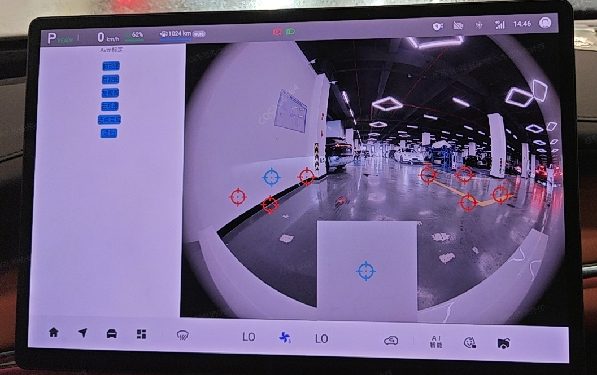
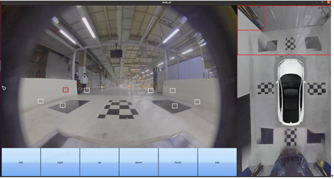

标定方法：进入车机工程模式。
标定步骤：
1、进入EDC工程模式，点击售后静态标定app。

2、若进入标定模式成功，EDC接受成功反馈后，则显示对应售后静态标定界面。

3、点击俯视图前/后/左/右对应的方向，可以切换标定视图。操作人员通过车机界面操作可对点状光标进行移动，选中光标后，边框标红，若移动距离≥2cm（TBD），则直接平移光标；若移动距离＜2cm（TBD），则以点击位置为中心对该局部区域进行放大，放大倍数2.5倍（TBD），在放大区域操作可移动光标，若点击非放大区域，放大区域消失；每路环视角点选择完成后，车机进行保存
4、完成4路视图所有角点确定后，点击开始标定，EDC发起手动标定请求，完成标定并产生新标定数据文件后反馈标定结果 。